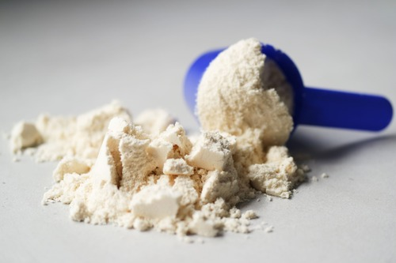

|  |
Що таке протеїн?Протеїн - це звичайний білок, що міститься в харчових продуктах, перш за все тваринного походження, хоча і в рослинній їжі він також присутній, але його зміст, амінокислотний профіль і біодоступність нижче. Його прийом викликаний необхідністю поповнювати та доповнювати білкову складову вашого раціону. Потреба в білку існує у кожної людини. У спортсмена ж, який прагне наростити м’язову масу така потреба вища. Але з огляду на свої фізіологічні особливості, або ж брак часу, багато людей не можуть отримувати необхідну кількість білка з їжі, саме тут на допомогу прийде протеїн. З такою добавкою отримувати потрібну дозу білка стає легше, адже протеїн можна змішати з водою або з іншим напоєм і випити, поповнивши свій організм будівельним матеріалом для м’язів.
|
Так як білок міститься в різних продуктах харчування, протеїн, в залежності від сировини, також може бути різним. Види протеїну розрізняються за швидкістю всмоктування травною системою і засвоєння організмом.
Існують 6 видів протеїну
Найпопулярніший на сьогоднішній день продукт спортивного харчування — це сироватковий протеїн. Він виготовляється зі звичайної молочної сироватки, шляхом видалення жирів і інших небілкових елементів в процесі фільтрації. Сироватковий протеїн швидко засвоюється, тому ідеальний для вживання до і після тренування. Він активізує обмін речовин, уповільнює засвоєння жирів і насичує організм потрібними амінокислотами для будівництва м’язів.
Якісні біологічно активні добавки, виготовлені з натуральної сировини, не становлять загрози для людини. Але вживати їх потрібно в тому дозуванні, яке вказане на упаковці. Якщо збільшити норму, то можуть спостерігатися висипання на шкірі, алергія і розлади травлення. Неправильний прийом протеїну може спровокувати набір зайвої ваги.
В залежності від концентрації білка сироватковий протеїн буває наступних видів:
Казеїн це білок, який складається з усіх молочних білків. Час перетравлення та абсорбції відрізняється від сироваткового білка. Через те, що він перетравлюється довше, це хороший білок, який потрібно споживати перед сном. Однак він не підходить для прийому після тренування, тому що він поглинається повільніше. Так само, як сироватковий білок містить лактозу в своєму складі. Казеїн зазвичай дорожче сироватки і має більше добавок для поліпшення смаку.
Соя єдине джерело рослинного білка, який містить всі незамінні амінокислоти. Соєвий білок може підтримувати імунітет організму і здоров'я кісток. Соя також може бути корисною в разі серцево-судинних захворювань і зниження ризику розвитку раку. З іншого боку, дослідження показують, що занадто багато споживання сої може сприяти гормональних порушень. Тому слід враховувати цей тип поживних речовин через те, що в даний час соя додається в багато харчові продукти, тому її споживання, часто несвідоме, досить велике.
Соєвий протеїн також може викликати алергію у людей, які страждають алергією на сою, але це хороша заміна білка в разі алергії на лактозу або яєчний білок.
Варто прочитати етикетку на упаковці і вибрати той протеїн, який найкраще для наших цілей. Найкраще купувати товари від відомих брендів з середнього цінового діапазону. Низька ціна може в цьому випадку мати низьку якість засвоюваність і смак такого поживної речовини, можуть бути не дуже хорошим.
Цей вид білка часто порівнюють із сироватковим протеїном через його таку ж високу ефективність та насиченість амінокислотами.
До плюсів можна віднести:
Молочний протеїн знайшов широке застосування в спорті завдяки своїм регенеруючим, антиалергенним властивостям, а також (завдяки амінокислотам, що входять до складу) за істотний вклад в енергозабезпеченні як шкірних, так і м'язових тканин. Час необхідний для засвоєння молочного протеїну дорівнює 5-8 годинам. Протеїн, що міститься в звичайному молоці додатково "навантажений" різними жирами і вуглеводами, що уповільнюють його швидкість засвоєння організмом і ефективність. Якщо ж молоко висушити і очистити, то вийде протеїн на основі молока, тобто суміш з 80% казеїну і 20% сироватки, швидкість засвоєння яких різна, що дозволяє отримати джерело енергії, діюче тривалий час. Основна перевага цього протеїну в його доступності і низькій вартості. Молочний протеїн в дозах, що не перевищує рекомендовані, дозволяє швидко наростити м'язову масу без шкоди для організму. Перевищення дозування відбивається тільки в розладі травлення і підвищеному навантаженні на нирки.